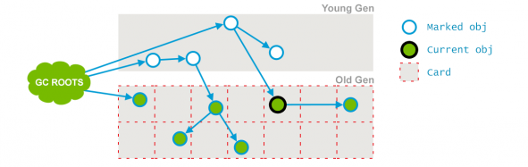

CMS GC
垃圾回收器组合
| Young 年轻代 | Tenured 老生代 | JVM options | 备注 |
|---|---|---|---|
| Serial | Serial | -XX:+UseSerialGC | 单线程回收，全程STW |
| Parallel Scavenge | Serial | -XX:+UseParallelGC -XX:-UseParallelOldGC | 年轻代并行，老年代串行，全程STW |
| Parallel Scavenge | Parallel Old | -XX:+UseParallelGC -XX:+UseParallelOldGC | 多线程回收，全程STW |
| Parallel New或Serial | CMS | -XX:+UseParNewGC -XX:+UseConcMarkSweepGC | 年轻代并行或串行，老年代并发，只有某个阶段会STW |
| G1 | G1 | -XX:+UseG1GC | 并发回收， 某个阶段会STW |
垃圾回收器从线程运行情况分类有三种：
串行回收： Serial回收器，单线程回收，全程STW；并行回收： 名称以Parallel开头的回收器，多线程回收，全程STW;并发回收： CMS与G1，多线程分阶段回收，只有某阶段会STW；
Minor GC、Major GC与Full GC
分代回收中:
Minor GC清理年轻代(Young GC)，除了G1 GC外，都会STW Major GC清理老年代(Tenured GC) Full GC清理整个堆
Minor GC触发条件:
Major GC触发条件:
Full GC触发条件:
- 调用
System.gc时，系统建议执行Full GC，不是必然执行 - 老年代空间不足
- 方法区空间不足
- 通过Minor GC后，进入老年代的平均大小 > 老年代的可用内存
- 由Eden区、From Space区向To Space区复制时，对象大小大于To Space可用内存，则把该对象转存到老年代，且老年代的可用内存小于该对象大小。即老年代无法存放新年代过度到老年代的对象的时候，会触发Full GC
CMS垃圾收集器 Concurrent Mark Sweep(CMS) Collector
并发，低停顿 特别是拥有大量长期数据（大老年代），多核心，低停顿
启用-XX:+UseConcMarkSweepGC
CMS收集器是分代的。 因此，minor GC和major GC都会发生。 CMS收集器尝试通过使用单独的垃圾收集器线程在执行应用程序线程的同时跟踪可访问对象，来减少由于major GC而导致的暂停时间。 在每个major收集周期中，CMS收集器会在收集开始时暂停所有应用程序线程一小段时间，然后收集中间再暂停一次。 第二次停顿往往是两个停顿中较长的一个。 在两个暂停期间都使用多个线程来执行收集工作。 收集的其余部分（包括大部分活动对象的跟踪和无法访问对象的清除）是通过与应用程序同时运行的一个或多个垃圾收集器线程来完成的。minor GC可以与正在进行的主要周期交错，并在一个 类似于并行收集器的方式（特别是在次要收集期间停止了应用程序线程）。
并发模式失效Concurrent Mode Failure
- 如果CMS收集器在老年代填满之前无法完成回收无法访问的对象，
- 如果老年代的可用空闲空间块(出现了碎片)无法满足分配，则暂停应用程序，并使所有应用程序线程已停止。 无法同时完成收集的情况称为并发模式失败，代表需要调整CMS收集器参数。
- 如果并发收集被显式垃圾收集（
System.gc()）中断 - 为提供诊断工具信息所需的垃圾收集中断了，则将报告并发模式中断。
if the CMS collector is unable to finish reclaiming the unreachable objects before the tenured generation fills up, or if an allocation cannot be satisfied with the available free space blocks in the tenured generation, then the application is paused and the collection is completed with all the application threads stopped. The inability to complete a collection concurrently is referred to as concurrent mode failure and indicates the need to adjust the CMS collector parameters. If a concurrent collection is interrupted by an explicit garbage collection (System.gc()) or for a garbage collection needed to provide information for diagnostic tools, then a concurrent mode interruption is reported.
Excessive GC Time and OutOfMemoryError
太多的时间花在gc上: 如果总时间的98%花在GC上，并且回收不到2%的堆空间，将抛出OutOfMemoryError
禁用命令行: -XX:-UseGCOverheadLimit
浮动垃圾Floating Garbage
边收集边运行，出现浮动垃圾
CMS垃圾回收特点
CMS只会回收老年代和永久代（1.8开始为元数据区，需要设置CMSClassUnloadingEnabled），不会收集年轻代；
CMS是一种预处理垃圾回收器，它不能等到老年代内存用尽时回收，需要在内存用尽前，完成回收操作，否则会导致并发回收失败(并发回收降级)；
所以CMS垃圾回收器开始执行回收操作，有一个触发阈值(参数名称)，默认是老年代或永久代达到92%；
CMS垃圾收集器步骤
CMS 处理过程有七个步骤：
| 步骤 | 是否STW | 详情 |
|---|---|---|
| 初始标记(CMS-initial-mark) | 会导致STW | 标记GCRoot和被年轻代引用的老年代对象 |
| 并发标记(CMS-concurrent-mark) | 与用户线程同时运行； | 扫描整个老年代，将引用关系变化的对象置为dirty |
| 预清理（CMS-concurrent-preclean） | 与用户线程同时运行； | |
| 可被终止的预清理（CMS-concurrent-abortable-preclean） | 与用户线程同时运行； | |
| 重新标记(CMS-remark) | 会导致STW | |
| 并发清除(CMS-concurrent-sweep) | 与用户线程同时运行； | |
| 并发重置状态等待下次CMS的触发(CMS-concurrent-reset) | 与用户线程同时运行； |
CMS运行流程图如下所示：
Phase 1: Initial Mark（初始化标记）
这是CMS中两次stop-the-world事件中的一次。这一步的作用是标记存活的对象，有两部分：
- 从GC Roots遍历可直达的老年代对象，下图中1；
遍历被新生代存活对象所引用的老年代对象，如下图节点2、3；
支持单线程或并发标记
- 发生STW
在Java语言里，可作为GC Roots对象的包括如下几种：
- 虚拟机栈(栈桢中的本地变量表)中的引用的对象 ；
- 方法区中的类静态属性引用的对象 ；
- 方法区中的常量引用的对象 ；
- 本地方法栈中JNI的引用的对象；
ps：为了加快此阶段处理速度，减少停顿时间:
- 开启并行化初始标记:
-XX:+CMSParallelInitialMarkEnabled- 同时调大并行标记的线程数，线程数不要超过cpu的核数:
-XX:ConcGCThreads=4
Phase 2: Concurrent Mark（并发标记）
通过遍历第一个阶段（Initial Mark）标记出来的存活对象，继续递归遍历老年代，并标记可直接或间接到达的所有老年代存活对象。
由于应用线程和GC线程是并发执行的，因此可能产生新的对象或对象关系发生变化，例如：
- 新生代的对象晋升到老年代；
- 直接在老年代分配对象；
- 老年代对象的引用关系发生变更；
- 等等。
对于这些对象，需要重新标记以防止被遗漏。为了提高重新标记的效率，本阶段只会把发生变化的对象所在的Card标识为Dirty，这样后续就只需要扫描这些Dirty Card的对象，从而避免扫描整个老年代。
并发标记阶段只负责将引用发生改变的Card标记为Dirty状态，不负责处理；
如下图所示，也就是节点1、2、3，最终找到了节点4和5。并不是老年代的所有存活对象都会被标记，因为标记的同时应用程序会改变一些对象的引用等。
这个阶段因为是并发的, 容易导致concurrent mode failure
Phase 3: Concurrent Preclean（并发预清理）
在并发预清洗阶段，将会重新扫描前一个阶段标记的Dirty对象，并标记被Dirty对象直接或间接引用的对象，然后清除Card标识。
前一个阶段已经说明，不能标记出老年代全部的存活对象，是因为标记的同时应用程序会改变一些对象引用，这个阶段就是用来处理前一个阶段因为引用关系改变导致没有标记到的存活对象的，它会扫描所有标记为Direty的Card
如下图所示，在并发清理阶段，节点3的引用指向了6；则会把节点3的card标记为Dirty；
最后将6标记为存活,如下图所示：
Phase 4: Concurrent Abortable Preclean（可中止的并发预清理）
本阶段尽可能承担更多的并发预处理工作，从而减轻在Final Remark阶段的stop-the-world。
这个阶段尝试着去承担下一个阶段Final Remark阶段足够多的工作。这个阶段持续的时间依赖好多的因素，由于这个阶段是重复的做相同的事情直到发生abort的条件（比如：重复的次数、多少量的工作、持续的时间等等）之一才会停止。
ps:此阶段最大持续时间为5秒，之所以可以持续5秒，另外一个原因也是为了期待这5秒内能够发生一次ygc，清理年轻代的引用，是的下个阶段的重新标记阶段，扫描年轻代指向老年代的引用的时间减少；
在该阶段，主要循环的做两件事：
- 处理 From 和 To 区的对象，标记可达的老年代对象；
- 和上一个阶段一样，扫描处理Dirty Card中的对象。
具体执行多久，取决于许多因素，满足其中一个条件将会中止运行：
- 执行循环次数达到了阈值；
- 执行时间达到了阈值；
- 新生代Eden区的内存使用率达到了阈值。
Phase 5: Final Remark（重新标记）
预清理阶段也是并发执行的，并不一定是所有存活对象都会被标记，因为在并发标记的过程中对象及其引用关系还在不断变化中。
因此，需要有一个stop-the-world的阶段来完成最后的标记工作，这就是重新标记阶段（CMS标记阶段的最后一个阶段）。主要目的是重新扫描之前并发处理阶段的所有残留更新对象。
主要工作：
遍历新生代对象，重新标记；（新生代会被分块，多线程扫描） 根据GC Roots，重新标记； 遍历老年代的Dirty Card，重新标记。这里的Dirty Card，大部分已经在Preclean阶段被处理过了。
这个阶段会导致第二次stop the world，该阶段的任务是完成标记整个年老代的所有的存活对象。
这个阶段，重新标记的内存范围是整个堆，包含young_gen和old_gen。为什么要扫描新生代呢，因为对于老年代中的对象，如果被新生代中的对象引用，那么就会被视为存活对象，即使新生代的对象已经不可达了，也会使用这些不可达的对象当做CMS的“gc root”，来扫描老年代； 因此对于老年代来说，引用了老年代中对象的新生代的对象，也会被老年代视作“GC ROOTS”:
当此阶段耗时较长的时候，可以加入参数-XX:+CMSScavengeBeforeRemark，在重新标记之前，先执行一次ygc，回收掉年轻代的对象无用的对象，并将对象放入survivor区或晋升到老年代，这样再进行年轻代扫描时，只需要扫描幸存区的对象即可，一般survivor区非常小，这大大减少了扫描时间
由于之前的预处理阶段是与用户线程并发执行的，这时候可能年轻代的对象对老年代的引用已经发生了很多改变，这个时候，remark阶段要花很多时间处理这些改变，会导致很长stop the word，所以通常CMS尽量运行Final Remark阶段在年轻代是足够干净的时候。
另外，还可以开启并行收集：-XX:+CMSParallelRemarkEnabled
Phase 6: Concurrent Sweep（并发清理
并发清理阶段，主要工作是清理所有未被标记的死亡对象，回收被占用的空间。

通过以上5个阶段的标记，老年代所有存活的对象已经被标记并且现在要通过Garbage Collector采用清扫的方式回收那些不能用的对象了。
这个阶段主要是清除那些没有标记的对象并且回收空间；
由于CMS并发清理阶段用户线程还在运行着，伴随程序运行自然就还会有新的垃圾不断产生，这一部分垃圾出现在标记过程之后，CMS无法在当次收集中处理掉它们，只好留待下一次GC时再清理掉。这一部分垃圾就称为“浮动垃圾”。
步骤7: 并发重置
并发重置阶段，将清理并恢复在CMS GC过程中的各种状态，重新初始化CMS相关数据结构，为下一个垃圾收集周期做好准备。
这个阶段并发执行，重新设置CMS算法内部的数据结构，准备下一个CMS生命周期的使用。
CMS日志分析
下面就是该参数设置打印出来的gc信息，一些非关键的信息已经去掉，如时间：
//第一步 初始标记 这一步会停顿*
[GC (CMS Initial Mark) [1 CMS-initial-mark: 299570K(307200K)] 323315K(491520K), 0.0026208 secs] [Times: user=0.00 sys=0.00, real=0.00 secs]
vmop [threads: total initially_running wait_to_block] [time: spin block sync cleanup vmop] page_trap_count
0.345: CMS_Initial_Mark [ 10 0 1 ] [ 0 0 0 0 2 ] 0
Total time for which application threads were stopped: 0.0028494 seconds
//第二步 并发标记
[CMS-concurrent-mark-start]
[CMS-concurrent-mark: 0.012/0.012 secs] [Times: user=0.00 sys=0.00, real=0.01 secs]
//第三步 并发预清理
[CMS-concurrent-preclean-start]
[CMS-concurrent-preclean: 0.001/0.001 secs] [Times: user=0.00 sys=0.00, real=0.00 secs]
//第四步 可被终止的并发预清理
[CMS-concurrent-abortable-preclean-start]
[CMS-concurrent-abortable-preclean: 0.000/0.000 secs] [Times: user=0.00 sys=0.00, real=0.00 secs]
//第五步 最终重新标记
[GC (CMS Final Remark) [YG occupancy: 72704 K (184320 K)][Rescan (parallel) , 0.0009069 secs][weak refs processing, 0.0000083 secs][class unloading, 0.0002626 secs][scrub symbol table, 0.0003789 secs][scrub string table, 0.0001326 secs][1 CMS-remark: 299570K(307200K)] 372275K(491520K), 0.0017842 secs] [Times: user=0.05 sys=0.00, real=0.00 secs]
vmop [threads: total initially_running wait_to_block] [time: spin block sync cleanup vmop] page_trap_count
0.360: CMS_Final_Remark [ 10 0 1 ] [ 0 0 0 0 1 ] 0
Total time for which application threads were stopped: 0.0018800 seconds
//第六步 并发清理
[CMS-concurrent-sweep-start]
[CMS-concurrent-sweep: 0.007/0.007 secs] [Times: user=0.00 sys=0.00, real=0.01 secs]
//第七步 并发重置
[CMS-concurrent-reset-start]
[CMS-concurrent-reset: 0.002/0.002 secs] [Times: user=0.00 sys=0.00, real=0.00 secs]
输出GC详情，需要添加 -verbose:gc 和 -XX:+PrintGCDetails 参数
CMS-initial-mark标示着并发收集周期的开始
CMS-concurrent-mark标示着并发标记阶段的结束
CMS-concurrent-sweep标志着并发清理阶段的结束
CMS-concurrent-preclean标志着预清理阶段，预清理代表着在准备CMS-remark阶段可以并发处理的工作
CMS-concurrent-reset是最后阶段，为下一次并发收集做准备
CMS-initial-mark indicates the start of the concurrent collection cycle, CMS-concurrent-mark indicates the end of the concurrent marking phase, and CMS-concurrent-sweep marks the end of the concurrent sweeping phase. Not discussed previously is the precleaning phase indicated by CMS-concurrent-preclean. Precleaning represents work that can be done concurrently in preparation for the remark phase CMS-remark. The final phase is indicated by CMS-concurrent-reset and is in preparation for the next concurrent collection.
调优参数与启用参数
下面抓取一下gc信息，来进行详细分析，首先将jvm中加入以下运行参数：
- -XX:+PrintCommandLineFlags [0]
- -XX:+UseConcMarkSweepGC [1]
- -XX:+UseCMSInitiatingOccupancyOnly [2]
- -XX:CMSInitiatingOccupancyFraction=80 [3]
- -XX:+CMSClassUnloadingEnabled [4]
- -XX:+UseParNewGC [5]
- -XX:+CMSParallelRemarkEnabled [6]
- -XX:+CMSScavengeBeforeRemark [7]
- -XX:+UseCMSCompactAtFullCollection [8]
- -XX:CMSFullGCsBeforeCompaction=0 [9]
- -XX:+CMSConcurrentMTEnabled [10]
- -XX:ConcGCThreads=4 [11]
- -XX:+ExplicitGCInvokesConcurrent [12]
- -XX:+ExplicitGCInvokesConcurrentAndUnloadsClasses [13]
- -XX:+CMSParallelInitialMarkEnabled [14]
- -XX:+PrintGCDetails [15]
- -XX:+PrintGCCause [16]
- -XX:+PrintGCTimeStamps [17]
- -XX:+PrintGCDateStamps [18]
- -Xloggc:../logs/gc.log [19]
- -XX:+HeapDumpOnOutOfMemoryError [20]
- -XX:HeapDumpPath=../dump [21]
先来介绍下下面几个参数的作用：
[0] 打印出启动参数行 [1] 参数指定使用CMS垃圾回收器； [2]、[3] 参数指定CMS垃圾回收器在老年代达到80%的时候开始工作，如果不指定那么默认的值为92%； [4] 开启永久代（jdk1.8以下版本）或元数据区（jdk1.8及其以上版本）收集，如果没有设置这个标志，一旦永久代或元数据区间也会尝试进行垃圾回收，但是收集不会是并行的，而再一次进行Full GC； [5] 使用CMS时默认这个参数就是打开的，不需要配置，CMS只回收老年代，年轻代只能配合Parallel New或Serial回收器； [6] 减少Remark阶段暂停的时间，启用并行Remark，如果Remark阶段暂停时间长，可以启用这个参数 [7] 如果Remark阶段暂停时间太长，可以启用这个参数，在Remark执行之前，先做一次ygc。因为这个阶段，年轻代也是CMS的gcroot，CMS会扫描年轻代指向老年代对象的引用，如果年轻代有大量引用需要被扫描，会让Remark阶段耗时增加； [8]、[9]两个参数是针对CMS垃圾回收器碎片做优化的，CMS是不会移动内存的， 运行时间长了，会产生很多内存碎片， 导致没有一段连续区域可以存放大对象，出现”promotion failed”、”concurrent mode failure”, 导致fullgc，启用UseCMSCompactAtFullCollection 在FULL GC的时候， 对年老代的内存进行压缩。-XX:CMSFullGCsBeforeCompaction=0 则是代表多少次FGC后对老年代做压缩操作，默认值为0，代表每次都压缩, 把对象移动到内存的最左边，可能会影响性能,但是可以消除碎片；
106.641: [GC 106.641: [ParNew (promotion failed): 14784K->14784K(14784K), 0.0370328 secs]106.678: [CMS106.715: [CMS-concurrent-mark: 0.065/0.103 secs] [Times: user=0.17 sys=0.00, real=0.11 secs]
(concurrent mode failure): 41568K->27787K(49152K), 0.2128504 secs] 52402K->27787K(63936K), [CMS Perm : 2086K->2086K(12288K)], 0.2499776 secs] [Times: user=0.28 sys=0.00, real=0.25 secs]
[11] 定义并发CMS过程运行时的线程数。比如value=4意味着CMS周期的所有阶段都以4个线程来执行。尽管更多的线程会加快并发CMS过程，但其也会带来额外的同步开销。因此，对于特定的应用程序，应该通过测试来判断增加CMS线程数是否真的能够带来性能的提升。如果未设置这个参数，JVM会根据并行收集器中的-XX:ParallelGCThreads参数的值来计算出默认的并行CMS线程数：
ParallelGCThreads = (ncpus <=8 ? ncpus : 8+(ncpus-8)*5/8) ，ncpus为cpu个数，
ConcGCThreads =(ParallelGCThreads + 3)/4
这个参数一般不要自己设置，使用默认就好，除非发现默认的参数有调整的必要； [12]、[13]开启foreground CMS GC，CMS gc 有两种模式，background和foreground，正常的CMS gc使用background模式，就是我们平时说的CMS gc；当并发收集失败或者调用了System.gc()的时候，就会导致一次full gc，这个fullgc是不是CMS回收，而是Serial单线程回收器，加入了参数[12]后，执行full gc的时候，就变成了CMS foreground gc，它是并行full gc，只会执行CMS中stop the world阶段的操作，效率比单线程Serial full GC要高；需要注意的是它只会回收old，因为CMS收集器是老年代收集器；而正常的Serial收集是包含整个堆的，加入了参数[13],代表永久代也会被CMS收集； [14] 开启初始标记过程中的并行化，进一步提升初始化标记效率; [15]、[16]、[17]、[18] 、[19]是打印gc日志，其中[16]在jdk1.8之后无需设置 [20]、[21]则是内存溢出时dump堆
CMS需要注意的问题
CMS不是full GC
有一点需要注意的是：CMS并发GC不是“full GC”。HotSpot VM里对concurrent collection和full collection有明确的区分。所有带有“FullCollection”字样的VM参数都是跟真正的full GC相关，而跟CMS并发GC无关的，CMS收集算法只是清理老年代。
减少remark阶段停顿
一般CMS的GC耗时 80%都在remark阶段，如果发现remark阶段停顿时间很长，可以尝试添加该参数：
-XX:+CMSScavengeBeforeRemark
在执行remark操作之前先做一次ygc，目的在于减少ygen对oldgen的无效引用，降低remark时的开销，如果添加该参数后 ”ygc停顿时间+remark时间<添加该参数之前的remark时间“,说明该参数是有效的；
内存碎片
CMS是基于标记-清除算法的，只会将标记为为存活的对象删除，并不会移动对象整理内存空间，会造成内存碎片，这时候我们需要用到这个参数;
-XX:CMSFullGCsBeforeCompaction=n
这个参数大部分人的使用方式都是错误的，往往会导致设置后问题更大。
CMSFullGCsBeforeCompaction这个参数在HotSpot VM里是这样声明的：
product(bool, UseCMSCompactAtFullCollection, true, \
"Use mark sweep compact at full collections") \
\
product(uintx, CMSFullGCsBeforeCompaction, 0, \
"Number of CMS full collection done before compaction if > 0") \
然后这样使用的：
*should_compact =
UseCMSCompactAtFullCollection &&
((_full_gcs_since_conc_gc >= CMSFullGCsBeforeCompaction) ||
GCCause::is_user_requested_gc(gch->gc_cause()) ||
gch->incremental_collection_will_fail(true /\ consult_young /));
CMS GC要决定是否在full GC时做压缩，会依赖几个条件。其中，
UseCMSCompactAtFullCollection 与 CMSFullGCsBeforeCompaction 是搭配使用的；前者目前默认就是true了，也就是关键在后者上。
用户调用了System.gc()，而且DisableExplicitGC没有开启。
young gen报告接下来如果做增量收集会失败；简单来说也就是young gen预计old gen没有足够空间来容纳下次young GC晋升的对象。
上述三种条件的任意一种成立都会让CMS决定这次做full GC时要做压缩。
CMSFullGCsBeforeCompaction 说的是，在上一次CMS并发GC执行过后，到底还要再执行多少次full GC才会做压缩。默认是0，也就是在默认配置下每次CMS GC顶不住了而要转入full GC的时候都会做压缩。 如果把CMSFullGCsBeforeCompaction配置为10，就会让上面说的第一个条件变成每隔10次真正的full GC才做一次压缩（而不是每10次CMS并发GC就做一次压缩，目前VM里没有这样的参数）。这会使full GC更少做压缩，也就更容易使CMS的old gen受碎片化问题的困扰。 本来这个参数就是用来配置降低full GC压缩的频率，以期减少某些full GC的暂停时间。CMS回退到full GC时用的算法是mark-sweep-compact，但compaction是可选的，不做的话碎片化会严重些但这次full GC的暂停时间会短些；这是个取舍。
concurrent mode failure
这个异常发生在CMS正在回收的时候。执行CMS GC的过程中，同时业务线程也在运行，当年轻代空间满了，执行ygc时，需要将存活的对象放入到老年代，而此时老年代空间不足，这时CMS还没有机会回收老年带产生的，或者在做Minor GC的时候，新生代救助空间放不下，需要放入老年代，而老年代也放不下而产生的。
设置CMS触发时机有两个参数：
-XX:+UseCMSInitiatingOccupancyOnly
-XX:CMSInitiatingOccupancyFraction=70
-XX:CMSInitiatingOccupancyFraction=70 是指设定CMS在对内存占用率达到70%的时候开始GC。
-XX:+UseCMSInitiatingOccupancyOnly如果不指定, 只是用设定的回收阈值CMSInitiatingOccupancyFraction,则JVM仅在第一次使用设定值,后续则自动调整会导致上面的那个参数不起作用。
为什么要有这两个参数？
由于在垃圾收集阶段用户线程还需要运行，那也就还需要预留有足够的内存空间给用户线程使用，因此CMS收集器不能像其他收集器那样等到老年代几乎完全被填满了再进行收集，需要预留一部分空间提供并发收集时的程序运作使用。
CMS前五个阶段都是标记存活对象的，除了”初始标记”和”重新标记”阶段会stop the word ，其它三个阶段都是与用户线程一起跑的，就会出现这样的情况gc线程正在标记存活对象，用户线程同时向老年代提升新的对象，清理工作还没有开始，old gen已经没有空间容纳更多对象了，这时候就会导致concurrent mode failure， 然后就会使用串行收集器回收老年代的垃圾，导致停顿的时间非常长。
CMSInitiatingOccupancyFraction参数要设置一个合理的值，设置大了，会增加concurrent mode failure发生的频率，设置的小了，又会增加CMS频率，所以要根据应用的运行情况来选取一个合理的值。
如果发现这两个参数设置大了会导致fullgc，设置小了会导致频繁的CMSgc，说明你的老年代空间过小，应该增加老年代空间的大小了；
promotion failed
这个异常发生在年轻代回收的时候；
在进行Minor GC时，Survivor Space放不下，对象只能放入老年代，而此时老年代也放不下造成的，多数是由于老年带有足够的空闲空间，但是由于碎片较多，新生代要转移到老年带的对象比较大,找不到一段连续区域存放这个对象导致的，以下是一段promotion failed的日志：
106.641: [GC 106.641: [ParNew (promotion failed): 14784K->14784K(14784K), 0.0370328 secs]106.678: [CMS106.715: [CMS-concurrent-mark: 0.065/0.103 secs] [Times: user=0.17 sys=0.00, real=0.11 secs]
(concurrent mode failure): 41568K->27787K(49152K), 0.2128504 secs] 52402K->27787K(63936K), [CMS Perm : 2086K->2086K(12288K)], 0.2499776 secs] [Times: user=0.28 sys=0.00, real=0.25 secs]
过早提升与提升失败
在 Minor GC 过程中，Survivor Unused 可能不足以容纳 Eden 和另一个 Survivor 中的存活对象， 那么多余的将被移到老年代， 称为过早提升（Premature Promotion）,这会导致老年代中短期存活对象的增长， 可能会引发严重的性能问题。 再进一步， 如果老年代满了， Minor GC 后会进行 Full GC， 这将导致遍历整个堆， 称为提升失败（Promotion Failure）。
早提升的原因
Survivor空间太小，容纳不下全部的运行时短生命周期的对象，如果是这个原因，可以尝试将Survivor调大，否则端生命周期的对象提升过快，导致老年代很快就被占满，从而引起频繁的full gc；
对象太大，Survivor和Eden没有足够大的空间来存放这些大象；
提升失败原因
当提升的时候，发现老年代也没有足够的连续空间来容纳该对象。
为什么是没有足够的连续空间而不是空闲空间呢？
老年代容纳不下提升的对象有两种情况：
老年代空闲空间不够用了；
老年代虽然空闲空间很多，但是碎片太多，没有连续的空闲空间存放该对象；
解决方法
如果是因为内存碎片导致的大对象提升失败，CMS需要进行空间整理压缩；
如果是因为提升过快导致的，说明Survivor 空闲空间不足，那么可以尝试调大 Survivor；
如果是因为老年代空间不够导致的，尝试将CMS触发的阈值调低；
其它导致回收停顿时间变长原因
linux使用了swap，内存换入换出（vmstat），尤其是开启了大内存页的时候，因为swap只支持4k的内存页，大内存页的大小为2M，大内存页在swap的交换的时候需要先将swap中4k内存页合并成一个大内存页再放入内存或将大内存页切分为4k的内存页放入swap，合并和切分的操作会导致操作系统占用cup飙高，用户cpu占用反而很低；
除了swap交换外，网络io（netstat）、磁盘I/O （iostat）在 GC 过程中发生会使 GC 时间变长。
如果是以上原因，就要去查看gc日志中的Times耗时：
[Times: user=0.00 sys=0.00, real=0.00 secs]
user是用户线程占用的时间，sys是系统线程占用的时间，如果是io导致的问题，会有两种情况
- user与sys时间都非常小，但是real却很长，如下：
[ Times: user=0.51 sys=0.10, real=5.00 secs ]
user+sys的时间远远小于real的值，这种情况说明停顿的时间并不是消耗在cup执行上了，不是cup肯定就是io导致的了，所以这时候要去检查系统的io情况。
sys时间很长，user时间很短，real几乎等于sys的时间，如下：
[ Times: user=0.11 sys=31.10, real=33.12 secs ]
这时候其中一种原因是开启了大内存页，还开启了swap，大内存进行swap交换时会有这种现象；
增加线程数
CMS默认启动的回收线程数目是 (ParallelGCThreads + 3)/4) ，这里的ParallelGCThreads是年轻代的并行收集线程数，感觉有点怪怪的；
年轻代的并行收集线程数默认是(ncpus <= 8) ? ncpus : 3 + ((ncpus * 5) / 8)，可以通过-XX:ParallelGCThreads= N 来调整；
如果要直接设定CMS回收线程数，可以通过-XX:ParallelCMSThreads=n，注意这个n不能超过cpu线程数，需要注意的是增加gc线程数，就会和应用争抢资源；
参考
https://plumbr.eu/handbook/garbage-collection-algorithms-implementations#concurrent-mark-and-sweep
http://www.infoq.com/cn/presentations/a-long-period-of-atypical-jvm-gc-caused-by-os/
GC Cause
Heap Inspection Initiated GC
因为执行了jmap -histo:live 触发的gc